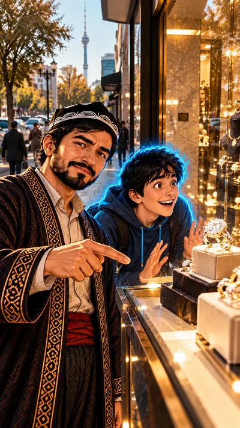

1-sahna — 9:16 (tik), 6 s

Ovoz
Usta: «Olmos noyob emas. Senga shunday deb aytishgan.»
Kamera: sekin yaqinlashish Usta yuziga — sir aytayotgandek, tomoshabin unga yaqinlashadiVertical 9:16, 6 seconds. Start from the attached image. Camera: slow push-in from the medium shot toward Usta's face. Usta looks into the lens with a sly knowing smile and speaks, his pointing hand moves slowly toward the ring in the window; one eyebrow rises on «noyob emas». Behind him Diyor keeps both palms on the glass and stares at the big ring with a dreamy open-mouthed smile, mouth not speaking. Passers-by far away keep walking, sparkles twinkle on the rings. Usta says in Uzbek, in a calm deep warm male voice of about 30-35: "Olmos noyob emas. Senga shunday deb aytishgan." Keep both characters exactly as in the image: Usta about 30, smooth young skin, short full black beard, black doppi with a white arch pattern, dark embroidered chapan with a red sash; Diyor about 20, round boyish face, messy jet-black hair. Same faces, five fingers on each hand. Diyor has a thin bright cyan-blue neon outline along his whole silhouette with a soft glow; it moves with him in every frame and never disappears. Nobody else has it. One continuous shot, no cuts. Faces stay exactly as in the image from the first to the last frame. The street lamp glass that glows cool neon blue in the image stays neon blue. Keep the semi-realistic hand-painted cartoon style of the image for the whole clip, never photorealistic. No text, no subtitles, no captions, no logos. The camera never stops moving.